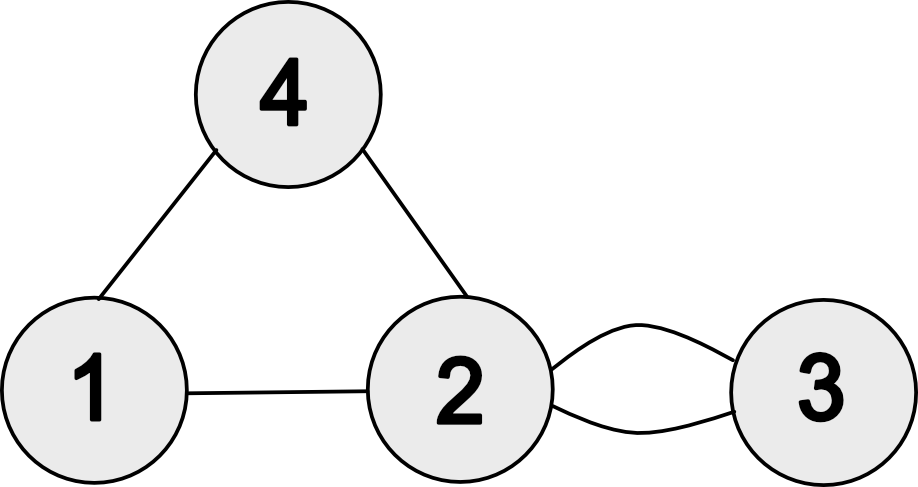

June 9, 2022 in Mathematics, Differential Equation 3 min read Kovacicのアルゴリズムを用いて調和振動子を解く Kovacicのアルゴリズムは有利係数の2階線形常微分方程式を解くアルゴリズムです。与えられた微分方程式が解くことができる場合にはその解を出力し、解くことができない場合にはそうであることがわかるという非常に便利なアルゴリズムになっています。ここで言う"解ける"という言葉は微分ガロア理論の意味で用いられています。僕自身は微分ガロア理論には詳しくはないので細かいことはわかりませんが、細かいことがわからなくてもKovacicのアルゴリズムを使うことができるものになっています。 Continue reading
March 22, 2022 in Mathematics, Measure Theory 2 min read Egorov's theorem Egorovの定理は関数列の概収束と概一様収束の関係を述べたものになります。 Egorovの定理 有限測度空間\((X,\mathcal{F},\mu)\)上の可測関数列\(f_{n}\colon X\to\mathbb{C}\)に対して、\(f_{n}\)が可測関数\(f\)に概収束するならば、\(f_{n}\)は\(f\)に概一様収束する。 Continue reading
March 15, 2022 in Mathematics, Probability 2 min read Uniform ratio distribution and pi 3月14日は円周率の日ということもあって次のツイートを見つけました。 Happy Pi Day, folks!(Today = March 14 = 3/14. And pi ~= 3.14.)Here's a fun way to approximate pi using probability.Take 2 random numbers X and Y between 0 and 1. What's the probability that the integer nearest to X/Y is even?Answer: (5 - pi)/4 pic.twitter.com/ZWviwSQ2VM— 10-K Diver (@10kdiver) March 14, 2022 この証明を行っていきます。 Continue reading
August 23, 2021 in Machine Learning, Julia 2 min read MNISTをMLPで推論(Julia/Flux実装) Juliaで機械学習をするための有名なライブラリにFluxがあります。Fluxを使ってMNISTの手書き数字の推論を行ったのでその方法をまとめておきます。 コードは次のようになります。これを参考に書きました。 Continue reading
August 2, 2021 in Mathematics, Machine Learning, Julia 2 min read Gram行列の固有値の数値計算 カーネル関数\(k(\cdot,\cdot)\)が与えられたとき、データ点\(\{x_{i}\}_{i=1}^{n}\)に対するGram行列(グラム行列)は $$ K=\begin{pmatrix}k(x_{1},x_{1}) & \cdots & k(x_{1},x_{n})\\\vdots & \ddots & \vdots\\ k(x_{n},x_{1}) & \cdots & k(x_{n},x_{n})\end{pmatrix} $$ で与えられます。色々な場面に登場するのですが、RBFカーネルからガウス過程を生成する際にその固有値計算で詰まったところがあったのでかんたんにまとめておきます。 Continue reading
July 30, 2021 in Mathematics, Differential Equation 3 min read Laplacianの積分表現 領域\(\Omega\subset\mathbb{R}^{n}\)上で定義された関数\(u\in C^{2}(\Omega)\)についてLaplacian(ラプラシアン)は $$ \Delta u(x)=\sum_{i=1}^{n}\frac{\partial^{2}u}{\partial x_{i}^{2}}(x) $$ で表されます。このとき、\(\partial B(x,r)=\{y\in\mathbb{R}^{n}\mid |x-y|=r\}\)とおくと、 $$ \Delta u(x)=\lim_{r\to+0}\frac{2n}{r^{2}|\partial B(x,r)|}\int_{\partial B(x,r)}u(y)-u(x)d\sigma_{y} $$ が成り立ちます。\(d\sigma_{y}\)は\(\partial B(x,r)\)上の面積要素です。 この表現を得るには\(u(y)\)を\(x\)まわりでTaylor展開することが大事になるのですが、 その際、平均値の定理によって得られるTaylor展開だと剰余項の評価が難しくなります。 積分型のTaylor展開を用いることでこの問題を解決することができます。 Continue reading
July 13, 2021 in Mathematics, Analysis 6 min read Borwein integral Borwein積分は\(\sin x/x\)に関する興味深い性質を持った積分のことです。 例えば $$ \int_{0}^{\infty}\frac{\sin x}{x}dx=\frac{\pi}{2} $$ となることはよく知られていますが、これに\(\sin(3x)/3x\)をかけたものについても $$ \int_{0}^{\infty}\frac{\sin x}{x}\frac{\sin (x/3)}{x/3}dx=\frac{\pi}{2} $$ が成り立ちます。同様のことは\(\sin (x/5)/(x/5)\)や\(\sin(x/7)/(x/7)\)をかけていっても成り立ち、 $$ \int_{0}^{\infty}\frac{\sin x}{x}\frac{\sin (x/3)}{x/3}\cdots\frac{\sin (x/13)}{x/13}dx=\frac{\pi}{2} $$ となります。しかし、次のステップではこの計算は崩れて $$ \int_{0}^{\infty}\frac{\sin x}{x}\frac{\sin (x/3)}{x/3}\cdots\frac{\sin (x/15)}{x/15}dx=\frac{467807924713440738696537864469}{935615849440640907310521750000}\pi<\frac{\pi}{2} $$ となってしまいます。一見するとこの値も\(\pi/2\)になりそうなのですが、何故か値がずれてしまいます。 このような積分のことをBorwein積分とよび、いくつかの計算がなされています。 Continue reading
May 31, 2021 in Mathematics, Graph Theory 3 min read Good Will Hunting Problem マット・デイモンとロビン・ウィリアムズ主演の映画『グッド・ウィル・ハンティング/旅立ち』(Good Will Hunting)の中で、MITの廊下に掲示されたグラフ理論の問題を清掃をしていたマット・デイモンが解いてしまうシーンがあります。 中学生とかのときに初めてこの映画を見たときにはよっぽど難しい問題なんだろうな、と思ったのですが、最近見返してみると定義に従って素直に計算すれば解ける問題だということがわかったのでまとめておきます。 Quote Given the graph \(G\), find The adjacency matrix, \(A\) The matrix giving the number of 3 step walks The generating function for walks from \(i\to j\) The generating function for walks from \(1\to3\)  Continue reading
May 31, 2021 in Mathematics, Linear Algebra 4 min read 特異値分解 行列\(A\)を\(m\times n\)の実行列とします。 このときある直交行列\(U\in\mathbb{R}^{m\times m},V\in\mathbb{R}^{n\times n}\)が存在して、 $$ U^{\mathsf{T}}AV=\Sigma=\begin{pmatrix}\mathrm{diag}(\sigma_{1},\dots,\sigma_{r}) & O_{r\times(n-r)} \\ O_{(m-r)\times r} & O_{(m-r)\times (n-r)}\end{pmatrix}\in\mathbb{R}^{m\times n} $$ となるようにできます。このような分解を特異値分解と言います。 Continue reading
May 30, 2021 in Mathematics, Analysis 2 min read 至るところ微分不可能な連続関数: 初等的な構成方法 \([-1,1]\)上の関数 $$ \varphi(x)=|x| $$ を考え、 これを\(\varphi(x+2)=\varphi(x)\)として\(\mathbb{R}\)上へ拡張します。 このとき、 $$ f(x)=\sum_{n=0}^{\infty}\left(\frac{3}{4}\right)^{n}\varphi(4^{n}x) $$ は\(\mathbb{R}\)上の連続関数ですが至るところ微分不可能であることが知られています。 以下でこれを示していきましょう。 Continue reading